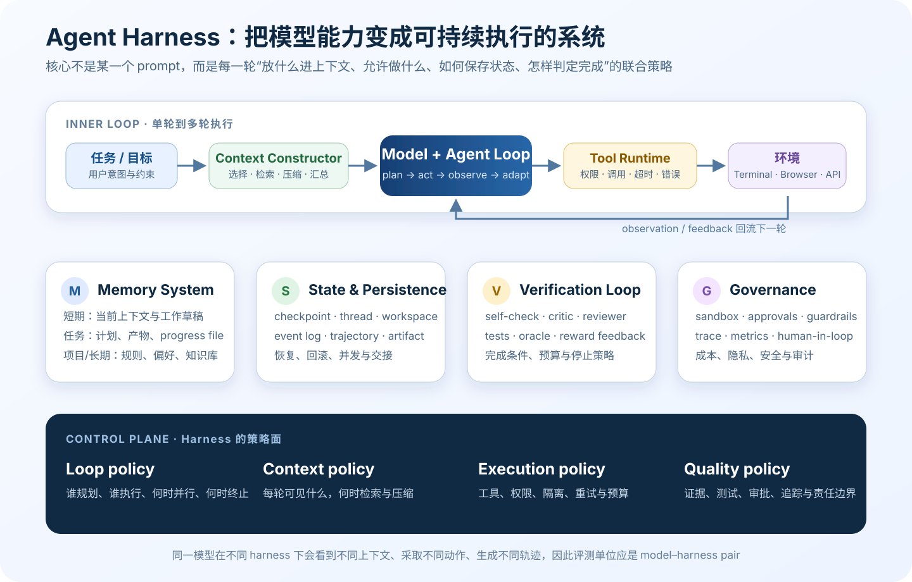
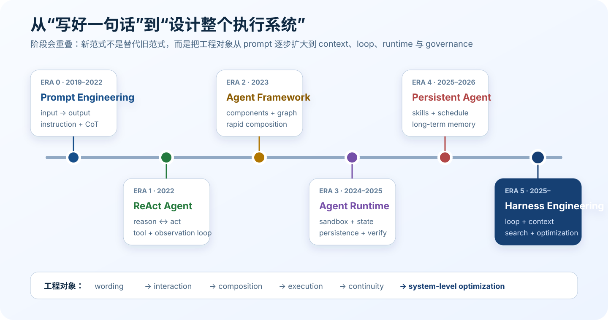

LLM Agent Harness：从 ReAct 到 Agent Runtime 的系统综述
研究范围与证据口径。 本文讨论的不是“SWE Agent 产品榜单”，而是模型外部的执行支架如何演化。资料更新至 2026-07-29；优先采用论文、官方技术报告、官方文档与官方仓库。产品文档会持续变化，未标发布日期的页面统一按访问日理解。文中的 Agent Harness 是操作性定义，并非已经标准化的行业术语。
1. Executive Summary
Agent Harness 是围绕基础模型构造的执行与反馈层。 它决定 agent 如何循环、每轮看见什么上下文、能调用哪些工具、动作在哪里执行、状态和记忆怎样保存、何时压缩或恢复、怎样验证结果，以及哪些动作需要批准。可以把它写成：
\[\text{Agent behavior} = f(\text{model},\ \text{context policy},\ \text{loop},\ \text{tools},\ \text{environment},\ \text{state},\ \text{verification})\]因此，模型能力不等于 agent 能力，模型名称也不是完整评测单位。同一模型放入不同 harness，会接收不同信息、使用不同动作空间、经过不同验证与停止策略，从而产生不同的 trajectory distribution。SWE-agent 已证明 Agent-Computer Interface 会显著改变软件任务行为；2026 年的实证工作进一步把 harness choice 称为 agent 评测中的 hidden variable（SWE-agent, 2024；The Scaffold Effect, 2026）。
为什么现在大家开始关注 harness，而不仅是模型？
- 前沿模型已能稳定地产生工具调用，瓶颈向长程执行迁移。 ReAct 解决了“推理—行动—观察”的最小闭环，却没有解决权限、持久化、恢复、上下文退化和可靠停止（ReAct, 2022）。
- 真实任务跨越多个 context window。 自动 compaction 只能延长运行，不能保证关键信息不丢失；长程 agent 还需要结构化笔记、progress file、checkpoint、测试 oracle 与交接协议（Anthropic context engineering, 2025；Effective harnesses for long-running agents, 2025）。
- 工具让错误变成现实副作用。 文件、终端、浏览器、消息、支付或企业 API 都要求 sandbox、permissions、approval、身份隔离与审计；这些不是模型权重本身能提供的。
- 可执行反馈成为新的能力放大器。 测试、编译器、数据库约束和环境终态可以把“再想一次”升级为可证伪的 verification loop。无外部反馈的 self-correction 并不可靠（LLMs Cannot Self-Correct Reasoning Yet, 2023）。
- harness 本身开始成为优化对象。 ADAS、AFlow、Agent Lightning 与 2026 年的 harness scaling 工作把 prompt、工具、控制流、memory policy、review topology 和预算纳入搜索、训练或共演化空间（ADAS, 2024；AFlow, 2024；Agent Lightning, 2025）。
本文的核心判断是：Prompt Engineering 优化一句指令，Context Engineering 优化每次调用的 token，Loop Engineering 优化多轮状态转移，Harness Engineering 则优化完整的可执行系统。
2. 什么是 Agent Harness？
“framework”“runtime”“harness”“system”经常被产品命名混用。为了可比较，本文采用以下边界。
| 层级 | 操作性定义 | 典型责任 | 不应混淆为 |
|---|---|---|---|
| Model | 根据当前输入 token 产生输出的参数化模型 | reasoning、generation、tool-call proposal | 持久记忆、执行器、sandbox |
| Agent | 模型动态控制过程和工具，在反馈循环中推进至终止条件的执行实体 | plan、act、observe、adapt | 任意多次 LLM 调用或固定 workflow |
| Agent Framework / SDK | 描述 agent、工具、节点、handoff、guardrail 的编程抽象 | authoring、composition、integration | 自动等于生产 runtime |
| Agent Runtime | 真正调度 graph/loop 并维护 run state 的运行层 | execution、streaming、retry、pause/resume、persistence | 完整产品和组织治理 |
| Agent Harness | 围绕模型的完整执行支架与策略集合 | loop、context、memory、tools、environment、state、verification、permissions、trace | 仅 prompt 模板或 UI |
| Agent System | 部署后的整体 | model + harness/runtime + app/UI + data + identity + ops + humans | 其中某一个 agent |
Anthropic 把 workflow 定义为由预设代码路径编排 LLM 与工具，把 agent 定义为由 LLM 动态决定过程与工具使用（Building effective agents, 2024）。LangGraph 则给出很清晰的分层：LangChain 是 framework，LangGraph 是 orchestration runtime，Deep Agents 是建立在其上的 harness（LangGraph overview）。OpenAI 对 Codex 的拆解更直接：harness 包含 core agent loop、prompt/context assembly、tool wiring、sandbox/permission instructions、history 与 compaction（Unrolling the Codex agent loop, 2026）。
由此可以得到两个实用结论：
- Runtime 是 harness 的执行内核，但 harness 更宽。 狭义 runtime 关注可靠调度；harness 还规定模型能看见什么、怎样与环境交互、如何验证与治理。
- 产品名不是架构层级。 “Claude Code”“Codex”“OpenHands”在不同语境中可能指 CLI、agent、runtime、SDK 或完整产品；比较表必须注明比较对象。
3. Agent Harness Taxonomy

自制 taxonomy。Harness 的差异不只发生在模型调用处，而是分布于 context constructor、tool runtime、state/persistence、verification 和 governance。底部四类 policy 决定上层组件如何共同工作。
3.1 Agent Loop
| 模式 | 控制结构 | 适用场景 | 主要风险 |
|---|---|---|---|
| ReAct | reason → act → observe，逐步决定下一动作 | 环境反馈密集、计划需要频繁修正 | 历史增长、短视、错误累积 |
| Plan-and-Execute | planner → executor → inspect/replan | 可分解的长程任务 | 计划过早固化、planner 成本 |
| Evaluator–Optimizer | generate → evaluate → revise | 有清晰 rubric、迭代确实能改善 | critic 与 generator 相关错误 |
| Reflection / Reflexion | feedback → verbal reflection → episodic memory → retry | 跨 trial 学习 | 把主观反思误当 ground truth |
| Multi-Agent | manager、handoff、orchestrator-workers、parallel vote | 专业化、上下文隔离、并行探索 | 通信成本、同步、重复与责任漂移 |
ReAct 的贡献不是三个标签，而是把模型决策、环境执行与 observation 回注连接成闭环（ReAct, 2022）。Plan-and-Execute 将 planner 与 executor 分开，通常还需要根据结果 replan；否则只是把错误提前写成一份更长的计划（Plan-and-Solve, 2023；ReWOO, 2023）。
Multi-agent 只是 orchestration topology，不是更高智能的同义词。其收益来自上下文隔离、工具专业化、并行探索和独立复核；若角色与路径完全由代码固定，按 Anthropic 的边界它仍可能是 multi-agent workflow。
3.2 Tool Runtime 与 Environment
工具层至少包含四件事：
- Interface：terminal、filesystem、browser、API、MCP、computer use。
- Execution：参数验证、超时、并发、重试、取消、幂等性和错误返回。
- Isolation：容器、OS sandbox、网络和文件写入边界、secret injection。
- Approval：哪些动作自动允许、哪些需人工批准、批准能否按 session 或 policy 复用。
MCP 把“应用如何向模型暴露工具和上下文”标准化，但它不自动解决工具是否可信、调用是否该批准、结果是否正确（Model Context Protocol, 2024）。协议是连接层，不是安全内核。
3.3 Context Engineering
Context 是某一次推理真正看见的 token 集。 它可能包含系统指令、工具 schema、当前请求、消息历史、文件片段、检索结果、memory 和 tool observations。
Context Engineering 的问题不是“窗口能装多大”，而是：
- 选择：哪些信息此刻相关？
- 装载：startup、path-scoped、just-in-time 还是由 agent 主动检索？
- 压缩：何时 summarize/compact，保留哪些 invariant？
- 隔离：哪些探索交给 subagent，主线程只接收结论？
- 清理：怎样避免陈旧 observation、重复工具 schema 与失败轨迹污染后续判断？
Anthropic 把它定义为在每次 inference 时，从不断增长的信息宇宙中维护最小而高信号的 token 集，并给出 compaction、structured note-taking 和 multi-agent isolation 等技术（Effective context engineering, 2025）。主流系统常采用“保留头部规则 + 最近尾部 + 摘要中间”的变体；durable transcript 仍在磁盘，不代表模型仍看见完整历史。
3.4 Memory、State、Checkpoint 与 Trajectory
这四个概念不能混为“记忆”：
| 概念 | 回答的问题 | 典型实现 |
|---|---|---|
| Context | 模型这一刻看见什么？ | 当前 token 序列 |
| Memory | 哪些信息可保存并在未来被选择？ | Markdown、KV/store、vector/keyword index、skills |
| State | 执行现在处于什么位置？ | plan、node、variables、approval、budget、errors |
| Checkpoint | 中断后从哪里恢复？ | state snapshot、thread checkpoint |
| Trajectory / Event log | 到底发生了什么？ | thought/action/observation、tool events、JSONL trace |
Memory 可按生命周期分为 short-term/thread、task、project 和 long-term，也可按语义分为 working、episodic、semantic 与 procedural。LangGraph 把 thread-scoped checkpoint 与 cross-thread store 分开；MemGPT 用分层 memory 类比 virtual context management（LangGraph Persistence；MemGPT, 2023）。
3.5 Verification、Observability 与 Governance
Verification 可分四层：
- 同一模型的 intrinsic critique；
- 独立模型、reward model 或 critic；
- tests、compiler、schema、constraint solver、simulator 等 executable verifier；
- 人类或组织审批。
Guardrail 限制策略违规，不等于证明任务正确；trace 记录发生了什么，也不等于 correctness。一个成熟 harness 需要把 offline eval（比较版本）与 online verifier（当前 loop 的反馈）分开。OpenAI Agents SDK 的 tracing 会记录 generation、tool call、handoff 和 guardrail；LangGraph checkpoint 支持恢复；但二者都必须再接任务特定的正确性判据（OpenAI Agents SDK tracing）。
4. 从 Prompt 到 Harness：发展历史

自制时间线。六个 era 相互重叠；新的工程对象扩大了控制范围，并没有让 prompt、tool 或单 agent 失效。
| 阶段 | 时间 | 代表工作/系统 | 关键增量 | 尚未解决 |
|---|---|---|---|---|
| Era 0: Prompt Engineering | 2019–2022 | GPT-2、GPT-3、CoT | instruction 与 in-context reasoning | 外部行动、持久状态 |
| Era 1: ReAct Agent | 2022 | ReAct、MRKL | reasoning/action/observation loop | 长程、恢复、权限 |
| Era 2: Agent Framework | 2023 | LangChain、AutoGPT、AutoGen、Reflexion、MemGPT | 组件、角色、graph、memory 原型 | framework 本身不创造 intelligence |
| Era 3: Agent Runtime | 2024–2025 | LangGraph、SWE-agent、OpenHands、Claude Code、Codex | sandbox、state、trajectory、persistence、verification | 成本、上下文退化、部署可靠性 |
| Era 4: Persistent Agent | 2025–2026 | OpenClaw、Pi、Codex app | skills、plugins、scheduler、跨会话 memory、外部通信 | 身份隔离、供应链与长期治理 |
| Era 5: Harness Engineering | 2025– | Context Engineering、ADAS、AFlow、DGM、HarnessForge | loop/context/harness 作为优化对象 | evaluator 质量、过拟合、安全自修改 |
三个历史节点尤其关键：
- 2022：ReAct 把“想”与“做”连起来。 这是现代 agent loop 的最小形态，但仍主要是短程轨迹。
- 2023：framework 爆发。 LangChain、AutoGPT、AutoGen 等降低了组合工具和角色的门槛，却也暴露死循环、费用失控、上下文膨胀与不可靠停止。Framework 解决“如何表达结构”，没有直接产生更聪明的决策。
- 2024–2026：运行可靠性成为一等对象。 LangGraph 强调 durable execution，SWE-agent 强调 ACI，OpenHands 采用 event log + sandbox runtime，Claude Code/Codex 把 compaction、instructions、permissions、checkpoint 和测试纳入产品；OpenClaw 把 session、channel、scheduler 和长期 memory 组合成常驻个人运行时。
“个人 Agent”也不应被写成 2025 才出现。2023 年的 Pi 已是 personal conversational AI；真正的新变化是 2025–2026 年出现具备持久 workspace、skills/plugins、scheduler、外部渠道、权限和可恢复状态的 persistent personal autonomous runtime。
5. 四个核心概念
5.1 Loop Engineering
Loop Engineering 不是统一学术术语。本文用它表示对 agent 状态转移策略的设计：
task
→ planner
→ executor
→ environment evidence
→ verifier / reviewer
→ replan | retry | request approval | finish
→ memory/state update
它与 Prompt Engineering 的区别是：前者优化 interaction process，后者优化单次 instruction。重要参数包括 planner/executor 分工、retry、parallelism、budget、termination、critic independence、human checkpoints 和 failure recovery。
5.2 Context Engineering
Context Engineering 是把所有潜在信息看成一个比 context window 大得多的集合，每一轮重新构造最有用的子集。实践中要把：
- 固定规则放在可重载的 instruction files；
- 当前计划和进度放在结构化 state/progress file；
- 大量探索放进隔离 subagent；
- 长期事实存入可审计 memory；
- 完整事件保留在 transcript，但只把必要摘要放回 active context。
自动 compaction 延长运行，不等于解决长期记忆。Claude Code 官方说明 CLAUDE.md 与 auto memory 在 compact 后会重注入，而 path-scoped 内容需再次访问相应文件才加载（Claude Code context window；Claude Code memory）。
5.3 Memory System
一个可用的 memory system 至少需要：
- write policy：什么值得记；
- storage：存在哪里、作用域是什么；
- retrieval policy：何时召回、如何排序；
- update/forget policy：怎样修订、去重、过期；
- provenance：事实来自哪里，是否能审计；
- permission boundary：不同用户、channel、agent 能看什么。
OpenClaw 的 USER.md、MEMORY.md、daily memory、hybrid search 与 compaction 前 memory flush 展示了较完整的个人长期记忆链；但官方也明确警告默认共享 DM session 在多用户场景可能泄露上下文，memory 不能替代 session isolation 和 permission policy（OpenClaw memory；OpenClaw sessions）。
5.4 Meta Harness
Meta Harness 把 harness 自己放进 outer loop：
Outer loop: propose / modify harness
→ evaluate on task distribution
→ select / archive / update
Inner loop: run current harness
→ model + tools + environment trajectory
→ task result and diagnostics
被优化对象可包括 prompt、工具 schema、控制流、memory/context 策略、review topology、retry 和 parallel budget。它不同于：
- 当前任务内 manager 调 worker 的 meta-agent orchestration；
- 更新模型权重的 model training。
ADAS 的 Meta Agent Search 让 meta-agent 编写并筛选 agent code；AFlow 用 MCTS 与执行反馈优化 workflow；DGM 让 agent 修改自身代码并用 benchmark 验证（ADAS, 2024；AFlow, 2024；Darwin Gödel Machine, 2025）。真正瓶颈不是生成更多变体，而是 evaluator 是否可靠、任务分布是否代表真实世界、改进能否跨模型与领域迁移。
6. 主流 Harness / Agent Runtime Survey
6.1 国际系统
| System | 维护方 / 开源 | Type / Target | Loop、Context 与 Memory | Tools / State | 独特设计与边界 |
|---|---|---|---|---|---|
| Claude Code | Anthropic；核心 CLI 非开源 | 产品化 coding harness | gather context → act → verify；CLAUDE.md、path rules、auto memory、auto compaction；subagent 独立 context |
file/search/shell/web/MCP/skills/hooks；resume/fork/checkpoint | 指令、memory 与 extension 体系完整；但 memory 是 context 而非强制策略，compaction 有损，核心 loop 不可审计（docs） |
| Codex CLI | OpenAI；Apache-2.0，Rust | 开源 coding harness/core | model ↔ tool item loop；AGENTS.md 分层注入；thread compaction；部分 memory 能力随版本/feature gate |
shell/patch/web/MCP/skills/multi-agent；rollout JSONL、resume/fork/archive | OS sandbox 与 approval policy 分离；thread/turn/item app-server 协议；不同 OS 隔离强度不同（repo） |
| OpenAI Agents SDK | OpenAI；MIT | 通用 agent SDK | model → final / handoff / tool → repeat；Sessions 与 local/server context | function/hosted/MCP/computer tools；多种 session store、RunState、trace | handoff 与 agents-as-tools 两种语义；不是开箱即用 coding runtime，sandbox 与工具安全由宿主配置（runner） |
| OpenHands | OpenHands；核心/SDK MIT，enterprise 例外 | SWE 平台、SDK、remote runtime | stateless Agent.step() + Conversation；append-only EventLog；condenser 保留 head/tail、摘要 middle |
terminal/file/task/MCP；Docker action executor；ConversationState | event sourcing、workspace 解耦、可本地/远程；容器和摘要带来资源成本与信息损失（SDK architecture） |
| SWE-agent | SWE-agent；MIT；maintenance-only | issue repair / research harness | configurable thought–action–observation；history processors | ACI/tool bundles、SWEEnv；.traj、replay config |
ACI 与轨迹最适合实验；不是长期个人 memory，官方建议新用户优先 mini-SWE-agent（repo） |
| Pi | Mario Zechner / earendil-works；MIT | 极简可嵌入 coding harness | agent-core tool loop；context files；lossy compaction 与 branch summary | read/bash/edit/write/extensions；JSONL tree sessions | session 原生是树，可分支/克隆；官方明确没有内置文件、进程、网络或凭据权限系统，需外部隔离（repo） |
| OpenClaw | OpenClaw Foundation；MIT | 常驻、多渠道个人 runtime | per-session serial loop；workspace memory、hybrid retrieval、compaction 前 flush | messaging/browser/shell/files/cron/session/skills；SQLite + transcript | Gateway、channels、routing、scheduler 与长期 memory 最接近“个人 Agent OS”；多用户必须配置 session isolation（repo） |
| OpenCode | anomalyco；MIT | provider-neutral coding harness | tool loop；rules/skills；auto compaction；subagent child sessions | file/bash/LSP/web/MCP/custom tools；local sessions | provider-neutral、LSP 与细粒度 allow/ask/deny；permission gate 不等于 OS sandbox（repo） |
6.2 中国系统：先分清模型、套餐、集成与 harness
| System / Ecosystem | 可核验的产品层级 | Harness 状态 | 关键机制与边界 |
|---|---|---|---|
| Kimi / Kimi Code | Kimi 模型 + Kimi Code CLI + Agent SDK | 官方完整终端 harness，开源 | 旧 kimi-cli 正式迁移到 kimi-code；CLI 具备文件、Shell、Web、MCP、skills，SDK 复用相同配置与会话。模型 benchmark 不应脱离 harness、采样和选择器比较（Kimi Code；Kimi Agent SDK） |
| GLM / ZCode | GLM 模型；GLM Coding Plan 订阅；ZCode 开发环境 | Coding Plan 不是 harness；ZCode 才是自有 agentic environment | Coding Plan 给 Claude Code、OpenCode、Cline 等工具提供模型/配额/MCP。另有 Open-AutoGLM 手机 domain harness（Coding Plan；ZCode） |
| DeepSeek ecosystem | 模型/API + 官方维护的集成目录 | 未核验到等价的官方通用 coding harness | 官方列表教第三方 agent/coding tools 接入 DeepSeek；不能把社区工具写成“DeepSeek 官方 Agent”（integrations；agent list） |
| Qwen Code | Qwen 模型 + 官方开源 terminal harness | 官方完整 coding harness | auto-memory、skills、subagents/teams、MCP、sandbox/worktree、IDE/IM/daemon/SDK；起点基于 Gemini CLI v0.8.2，后停止上游同步并独立演化（Qwen Code） |
| MiMo / MiMoCode | MiMo 模型 + OpenCode fork 发行版 | 基于 OpenCode 深度演化的 harness | 保留多 provider、TUI、LSP、MCP 与 plugins，增加持久记忆、context、subagent、goal loop 与自改进 workflow；应披露其上游关系（MiMo Code） |
中国生态可概括为三条路线：
- 自有完整 harness：Kimi Code、Qwen Code；
- 基于国际开源底座深度分叉：MiMoCode ← OpenCode；
- 模型/套餐进入多家第三方 harness：GLM Coding Plan、DeepSeek integrations。
它们不能被压成“每家公司都有一个 Agent”。品牌边界本身就是 survey 需要澄清的技术事实。
6.3 共同结构与真正差异
主流系统的内层 loop 已高度趋同：
assemble context → call model → execute tool → append observation → repeat
差异主要在 loop 外围：
- 安全：Codex 有明确 OS sandbox + approvals；OpenHands 使用容器 runtime；Pi 官方明确无内置权限系统；OpenClaw 还要处理 channel/session 隔离。
- 状态：OpenHands 是 append-only EventLog；SWE-agent 保存实验 trajectory；Codex/Claude/OpenClaw/OpenCode 以 thread/session 为中心；Pi 原生是 JSONL tree。
- 记忆：SWE-agent/Pi 强在轨迹与会话；OpenClaw 强在跨会话 personal memory；Agents SDK 把 store 交给应用；Claude Code 与 Codex 把项目规则、会话和逐步演化的 memory 结合起来。
- 研究可控性：mini-SWE-agent 的线性历史和 bash-only loop 最透明；产品型 runtime 提供更多治理能力，但变量也更多。
7. 开源生态
下表中的“研究友好”指控制流可读、配置可固定、轨迹可导出和实验可复现，不等于项目质量排名。
| Project | 类别 | Architecture | Extensibility | Research Friendly | Trajectory / State |
|---|---|---|---|---|---|
| OpenClaw | General / Personal Runtime | Gateway + sessions + channels + memory + cron | skills、plugins、MCP、channels | 中：系统变量多 | SQLite sessions、transcripts、memory files |
| Pi | General / Coding Harness | agent-core + coding CLI + TUI/RPC | extensions、packages、skills | 高：core 小、session tree 清晰 | JSONL tree + compaction/branch summaries |
| OpenCode | Coding Harness | provider-neutral CLI/server + LSP + child sessions | agents、tools、plugins、MCP | 中高 | local sessions、parent-child state |
| SWE-agent | SWE Research Harness | configurable ACI + environment loop | tool bundles、history processors、parsers | 高 | 完整 .traj、config、replay |
| OpenHands | SWE Platform / Runtime | Agent step + Conversation + EventLog + workspace | SDK、tools、MCP、runtime plugins | 高，但部署较重 | append-only event log、serializable state |
| mini-SWE-agent | Minimal SWE Harness | 约百行 agent、bash-only、linear history | 环境/model/config 可替换 | 很高：适合 baseline、FT/RL | messages 即 trajectory，易调试 |
| LangGraph | Framework + Runtime | state graph + checkpoint + durable task queue | nodes、edges、stores、interrupts | 高 | checkpoints、threads、stores |
| AutoGen | Multi-Agent Framework | message/event runtime + AgentChat teams | agents、teams、runtimes、extensions | 中高 | message/state APIs；当前 maintenance mode |
mini-SWE-agent 的存在提供了一个重要反例：模型变强后，复杂 scaffold 并非总能带来净收益。它只用 bash、线性 history 和独立 subprocess，适合作为 benchmark/训练基线（mini-SWE-agent）。另一方面，当任务涉及长期运行、多人权限、恢复、审批和多环境时，OpenHands、LangGraph、OpenClaw 一类重 runtime 的系统价值才会显现。不存在脱离任务、模型和风险边界的一维“最佳 harness”。
8. Domain-Specific Harness
通用 harness 往往提供 loop、memory、tools 和 state 的公共底座，再通过 adapter 连接领域：
General runtime
→ domain policy / ontology
→ specialized tools and environment
→ domain verifier
→ risk and approval boundary
→ replayable trajectory
真正的 domain-specific harness 不是在 system prompt 多加几段知识，而是把领域的 状态空间、动作空间、oracle 与风险边界 编入 runtime。
| Domain | Harness 必须额外提供 | 代表证据 |
|---|---|---|
| SWE | repo/worktree、terminal、build/tests、patch、code review | SWE-agent 的 ACI；Codex cloud 的 per-task sandbox（Codex, 2025） |
| Math | symbolic/numeric verifier、proof checker、test-time search | executable answer checking；不能只用 self-critique |
| Browser / GUI | 可复位的 app/OS、screen state、action grounding、终态 evaluator | OSWorld 把真实 OS/app、初态配置与执行式 evaluator 组合（OSWorld, 2024） |
| Customer service / transaction | policy、domain API、模拟用户、database end state、一致性指标 | τ-bench 用 pass^k 暴露“一次成功不等于稳定可靠”（τ-bench, 2024） |
| Science / chemistry | instrument/API、experiment state、cost/safety、domain oracle | ChemCrow 集成专家工具，但后续工作也显示工具只在适配任务上有净收益（ChemCrow, 2023；Tooling or Not Tooling?, 2024） |
未来更可能出现的是 shared runtime kernel + domain contract：公共层负责隔离、调度、状态和审计；领域层负责工具、环境、verifier 和审批。这比为每个领域复制一套完整 runtime 更可维护，也比“万能 agent + prompt adapter”更可靠。
9. Future Research Direction
9.1 Harness Scaling：新的 scaling axis
模型 scaling 继续重要，但长程 agent 还可沿系统维度扩大：
- 更多并行 rollout 与分工；
- 更好的 context governance；
- 更可信的 cross-session memory；
- 动态 skill/tool routing；
- 更强 verifier 与审计；
- 更高效的状态恢复和资源调度。
2026 年的 From Model Scaling to System Scaling 把这些组件合称为 harness scaling，并提出 trajectory quality、memory hygiene、context efficiency、communication fidelity 和 verification cost 等指标（论文）。这是单作者预印本，应视为研究议程，而非已证实定律。
9.2 Harness 改变 Trajectory Distribution
同一模型 + 不同 harness 不只是最终 pass rate 不同，还会出现不同失败指纹：无动作 turn、重复探索、错误终止、验证不足、上下文遗忘与 token 浪费。未来评测至少应同时报告：
- model snapshot；
- harness/version 与 system prompt；
- tool schema 与 ACI；
- sandbox/evaluator；
- token、step、time budget；
- compaction 与 memory policy；
- parallel sampling、selector 和 retry；
- cost、latency、human oversight。
否则所谓“模型比较”很可能混入 scaffold effect。最终答案只是一条轨迹的投影，训练、诊断和安全更需要可回放 trajectory。
9.3 Harness Learning
可自动学习的对象包括：
| 路线 | 学什么 | 代表工作 | 风险 |
|---|---|---|---|
| Search / evolution | prompt、tools、control flow、agent code | ADAS、AFlow、DGM | benchmark 过拟合、搜索成本 |
| RL from trajectories | policy、tool use、credit assignment | Agent Lightning | 奖励错误、长程 credit |
| Interface adaptation | environment contract、procedural skill、trajectory regulation | Life-Harness | 跨领域迁移是否稳健 |
| Co-evolution | harness structure + model policy | HarnessForge、EvoTrainer | 联合空间大、兼容性与安全 |
新结果应谨慎表述为“作者报告”。尤其是 2026 年预印本的提升，必须在跨任务、跨模型、预算一致和独立 evaluator 下复现，才能称为稳定 harness learning。
9.4 Agent Operating System
“Agent OS”若要比营销比喻更严格，应至少包含：
- agent/process scheduling；
- context lifecycle 与 context switch；
- memory/storage；
- tool/capability registry；
- identity、access control 与 sandbox；
- event log、audit 与 resource accounting；
- 面向 agent 的 SDK / system calls。
AIOS 把 LLM、memory manager、storage manager、tool manager 和 scheduler 组织为 OS-like kernel（AIOS, 2024）。OpenClaw 已呈现 Gateway、daemon、routing、sessions、channels、sandbox、skills 和 cron 等“应用层 Agent OS”特征，但仍不是传统操作系统内核。这个类比最有价值的部分不是名字，而是提醒我们：context、tool、token、concurrency、credential 和 human attention 都是需要调度与隔离的系统资源。
9.5 安全、治理与长期熵
持久 Agent 会积累 memory、skills、插件、凭据、定时任务和自修改配置。未来研究必须处理：
- memory poisoning 与跨用户泄漏；
- skill/plugin supply-chain risk；
- indirect prompt injection；
- approval fatigue；
- stale state 与 zombie tasks；
- 自修改 harness 的可回滚、签名、审计和 evaluator capture；
- agent-legible repository 如何避免长期 entropy。
OpenAI 的 Harness Engineering 实践把环境、意图、feedback loop、agent-legible logs/metrics、结构约束和 entropy control 视为工程师的新工作对象（Harness engineering, 2026）。这说明 harness 的终局不是“更复杂的循环”，而是一个能持续吸收错误证据、机械化约束并保持可理解性的系统。
10. 结论
- Agent Harness 不是模型外壳，而是控制 agent 行为分布的执行与反馈层。
- ReAct 提供最小闭环；现代 runtime 增加 context、memory、state、sandbox、verification、trace 和恢复。
- Framework 解决如何描述，Runtime 解决如何执行，Harness 解决如何在真实环境中可靠工作，System 是完整部署整体。
- Context、Memory、State 与 Trajectory 必须分开设计；“保存过”不等于“模型此刻看见”，完整日志也不应全部塞回窗口。
- Multi-agent 是拓扑与预算决策，不是默认升级；极简 baseline 与复杂平台会长期共存。
- 产品比较应以 model–harness pair 为单位，并披露工具、预算、sandbox、context、selector 和 verifier。
- 下一阶段的竞争点会从 prompt/tool list 转向 trajectory data、可验证环境、context/memory governance、permissions/audit 与 harness 自动优化。
最简洁地说：
模型决定“可能会多聪明”，harness 决定“这次实际看见什么、能做什么、是否能坚持、错了怎样恢复，以及完成是否有证据”。
主要一手来源
概念、历史与工程方法
- ReAct: Synergizing Reasoning and Acting in Language Models, 2022.
- Reflexion: Language Agents with Verbal Reinforcement Learning, 2023.
- Self-Refine: Iterative Refinement with Self-Feedback, 2023.
- Generative Agents, 2023.
- MemGPT, 2023.
- Anthropic: Building effective agents, 2024-12-19.
- Anthropic: Effective context engineering for AI agents, 2025-09-29.
- Anthropic: Effective harnesses for long-running agents, 2025.
- OpenAI: Unrolling the Codex agent loop, 2026-01-23.
- OpenAI: Harness engineering, 2026.
Runtime、开源项目与产品文档
- Claude Code documentation.
- OpenAI Codex.
- OpenAI Agents SDK.
- OpenHands Software Agent SDK.
- SWE-agent 与 mini-SWE-agent.
- Pi.
- OpenClaw.
- OpenCode.
- LangGraph.
- AutoGen.
- Kimi Code, Qwen Code, MiMo Code.
自动优化、评测与领域 Harness
- Automated Design of Agentic Systems, 2024.
- AFlow, 2024.
- Darwin Gödel Machine, 2025.
- Agent Lightning, 2025.
- From Model Scaling to System Scaling, 2026.
- The Scaffold Effect in Coding Agents, 2026.
- AIOS: LLM Agent Operating System, 2024.
- OSWorld, 2024.
- τ-bench, 2024.
- ChemCrow, 2023.